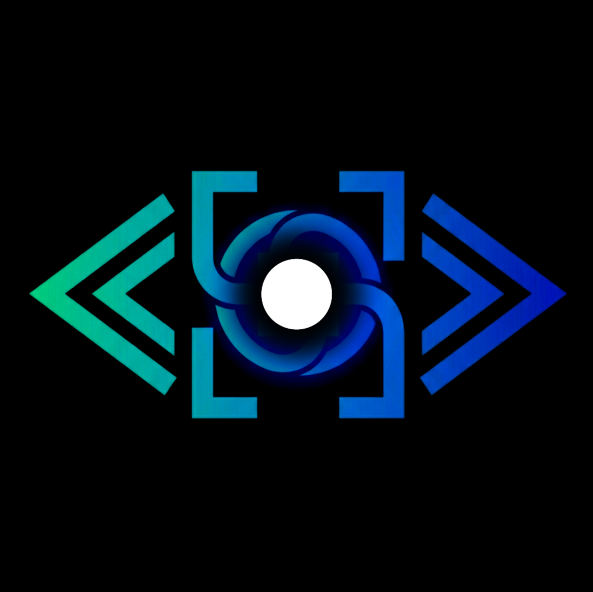

Persistent Sessions
Start once, reconnect later, and keep the live process running.

Persistent Session Runtime
Persistent CLI coding sessions across devices, with supervision, control handoff, and real execution continuity.
Sentrits is a session runtime and control plane for AI coding CLIs. It keeps the actual terminal-backed process alive on a host machine while clients attach, detach, observe, and hand off control across devices.
Start once, reconnect later, and keep the live process running.
Many clients may watch a session while a single controller owns input.
Switch active control between host, web, and iOS without restarting the workflow.
Reconnect with useful terminal state instead of waiting for luck or repaint timing.
Sentrits currently targets macOS and Linux hosts.
./tools/dev/install-macos.sh ./build/sentrits-<version>-macos-$(uname -m).dmgsudo dpkg -i ./build/cpack/sentrits_<version>_amd64.deb
sentrits service install
systemctl --user daemon-reload
systemctl --user enable sentrits.service
systemctl --user start sentrits.service
Then use commands like sentrits host status, sentrits session list,
and sentrits session start --provider codex --attach.